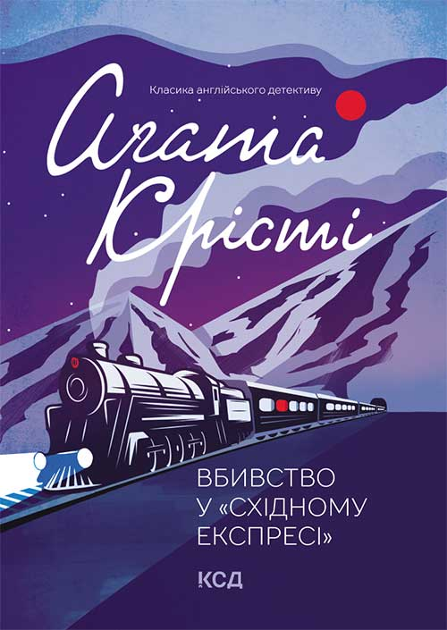
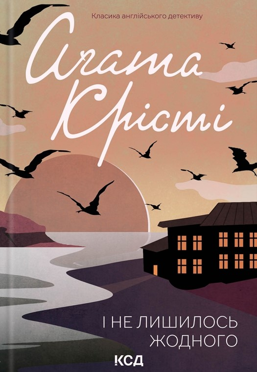

Вбивство у Східному Експресі
1934
The Queen of Crime
ABOUT AUTHOR
1890-1976
Агата Крісті – англійська письменниця, одна з найвідоміших авторок детективної літератури. За своє життя вона написала 66 детективних романів, створивши легендарних персонажів Еркюля Пуаро та міс Марпл. Її твори й сьогодні захоплюють читачів загадковими сюжетами та несподіваними розв'язками.

SELECTED WORKS
Історії, які зробили Агату Крісті королевою детективу.

1934

1939

1937